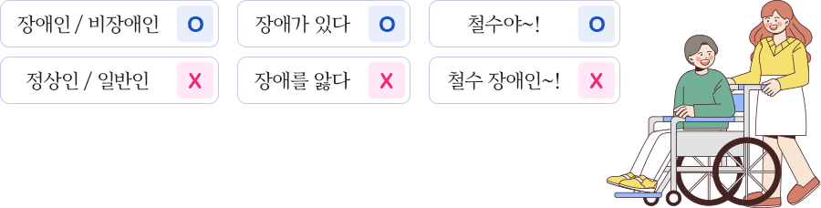

-
호칭의 에티켓, 그 사람의 '이름'을 불러주세요.
장애보다는 '사람'을 먼저 봐주세요. 장애는 한 개인이 갖고 있는 수많은 특성 중 하나입니다.
'OO 장애인'보다는 그 사람의 이름을 불러주는 것이 가장 좋습니다.
-

-
'장애인'과 '비장애인'에 대한 올바른 표현법
'장애인'과 '비장애인'이란 표현이 맞습니다.
비장애인을 '정상인', '일반인'으로 표현하는 것은 장애가 비정상적이고 일반적이지 않다는 인상을 줄 수 있으므로 적절하지 않습니다.
-
장애에 대한 올바른 표현법 '장애가 있다.'
'장애를 앓다?'는 적절하지 않은 표현법입니다.
장애는 질병이 아닙니다. '장애를 앓다'보다는 '장애가 있다'로 표현하는 것이 좋습니다.